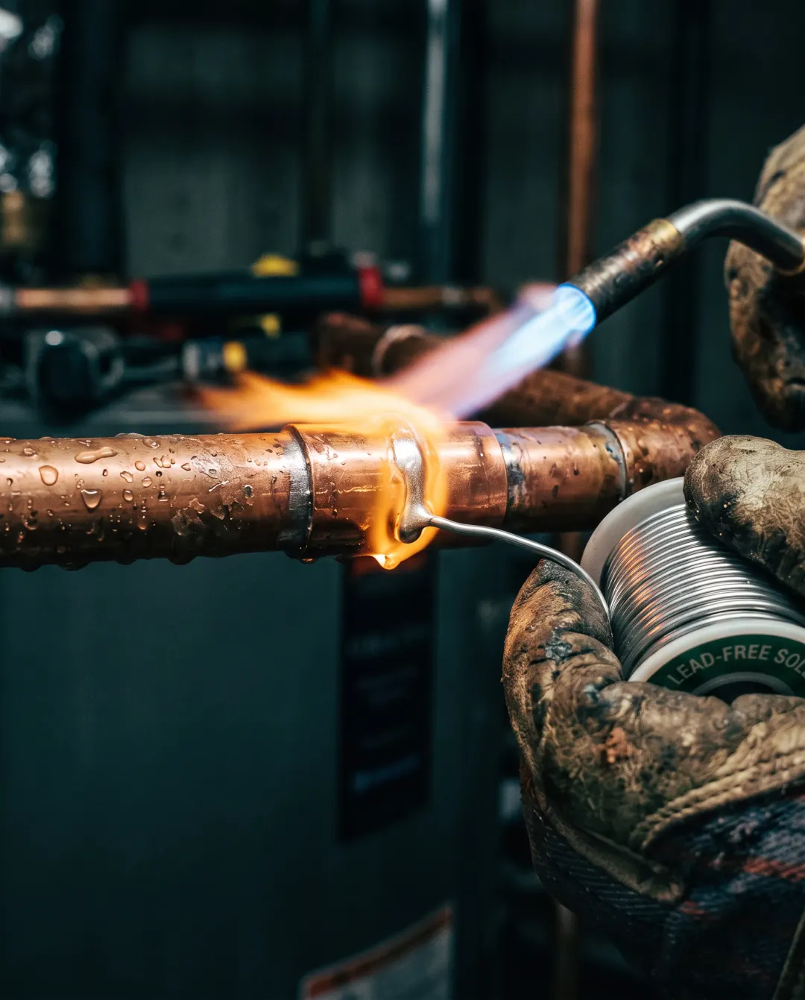
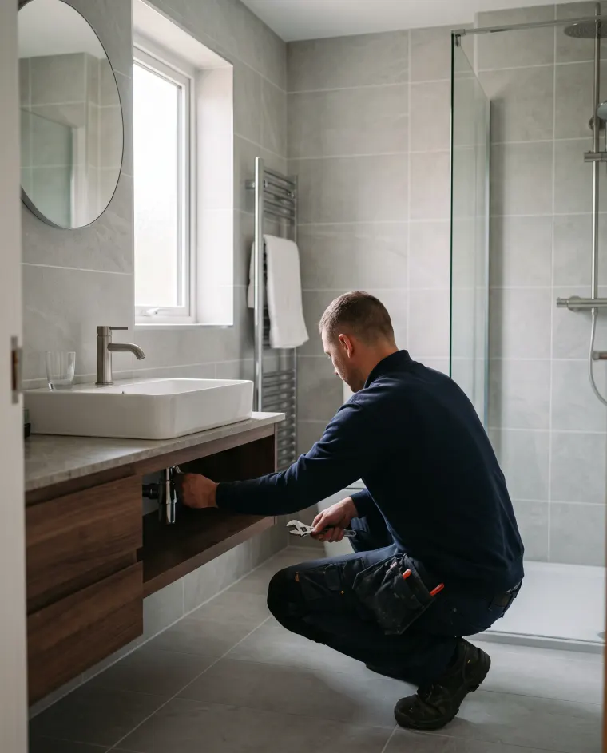
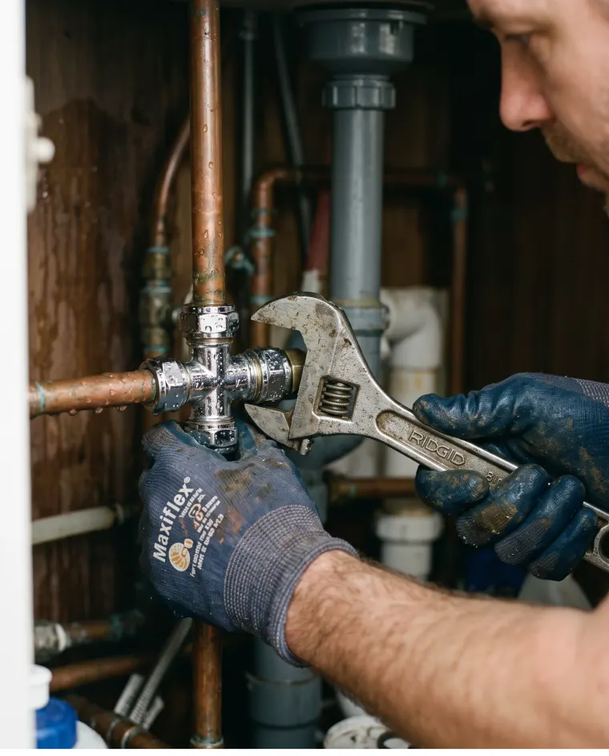

Fictief voorbeeldbedrijf, gebouwd door Belvanger om te laten zien wat mogelijk is. Zelf zo'n website laten bouwen →
Erkend loodgieter · regio Utrecht
Van een druppende kraan tot een complete badkamer. Vaste prijs vooraf, netjes achtergelaten, en dag en nacht bereikbaar bij spoed.

Waar wij goed in zijn
Geen verrassingen achteraf, geen doorverwijzen. Wij lossen het ter plekke op, met een vaste prijs die we vooraf afspreken.
Snel gevonden, netjes gerepareerd. Ook 's avonds en in het weekend bij acuut waterleed.
Afvoer, riool of toilet verstopt? Wij verhelpen het met professionele ontstoppingsapparatuur.
Van een nieuwe kraan tot een complete badkamerrenovatie, in overleg en op maat.
Jaarlijkse onderhoudsbeurt of storing? Wij houden uw installatie veilig en zuinig.
Een goede loodgieter bel je maar één keer.
Familiebedrijf sinds 2003 · vaste prijs vooraf
Ons werk
Straks staan hier de echte foto's van úw projecten. Zo laat u nieuwe klanten precies zien wat ze van u kunnen verwachten.

Nieuwe badkamer · Utrecht
Lekkage verholpen · NieuwegeinOver ons
Van Dijk Loodgietersbedrijf is een familiebedrijf. Bij ons krijgt u altijd dezelfde vakman aan de deur, iemand die uw situatie kent. Wij werken met vaste prijzen, leggen uit wat we doen en waarom, en ruimen netjes op als we klaar zijn.
Bel direct, ook bij spoed, of vraag een vrijblijvende offerte aan. Wij reageren doorgaans binnen een paar uur.
085 - 130 24 68Dag en nacht bereikbaar bij spoed.